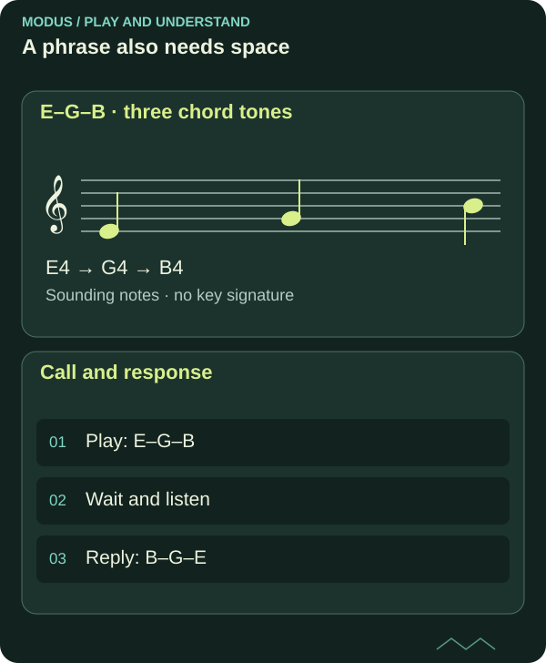

From scales to your first improvisation
You do not need to use every note in the scale. A few notes, a clear rhythm and space between phrases are enough to get started.

Begin in a small area
Choose E Aeolian, also called E natural minor, in backing tracks. The notes are E, F♯, G, A, B, C and D. Choose triads for Em–C–G–D, or seventh chords for Em7–Cmaj7–Gmaj7–D7.
Start with E, G and B. These are the triad notes of E minor. Play one or two notes at a time and let the backing track answer in the gaps. You are practising making a phrase, not showing that you know a scale.

Read the diagram as text
- E–G–B · three chord tones: E4 → G4 → B4
- Call and response: Play: E–G–B; Wait and listen; Reply: B–G–E
Give a small idea several lives
Find a rhythm you like on one note. Repeat the rhythm and change only the last note. Then try the same notes with a different rhythm. This creates a clear connection between phrases.
You can also answer a short phrase with a similar phrase. Listen for whether the answer feels like a continuation, a question or an ending. The pause between them is part of the music.
A scale is a selection of notes
All seven notes may belong to the key, but their meaning changes against the chords being played. A note that feels settled over Em7 may create more tension over another chord.
Over time, explore the chord tones of each chord and land on one when the harmony changes. You do not need to move the whole scale map with every change: listen for new target notes within the same map.
Change one thing and listen to the result
Make a short phrase with E, G and B over Em. Repeat it with the same rhythm, but end on G instead of E. The third, G, can make the minor colour clear without requiring more notes.
Then leave a pause before your response. Compare what changes when the pause is longer, the last note is sustained, or a note is repeated. Describe your choice in a simple sentence. The task has more than one musical solution.
FROM READING TO PLAYING
Try it yourself.
Set a relaxed tempo. Use E, G and B for one round. Then add D, followed by F♯. Play fewer notes if you stop hearing what the phrase is trying to say.
Play over E natural minorCHECK YOUR UNDERSTANDING
What do you remember?
Three questions about what you have read. Get all three right to complete the quiz. Try as many times as you like.
Completion is saved in this browser and shared between Norwegian and English.
You answered all three questions correctly. Take the idea to your instrument.
Back to the article library ↗︎